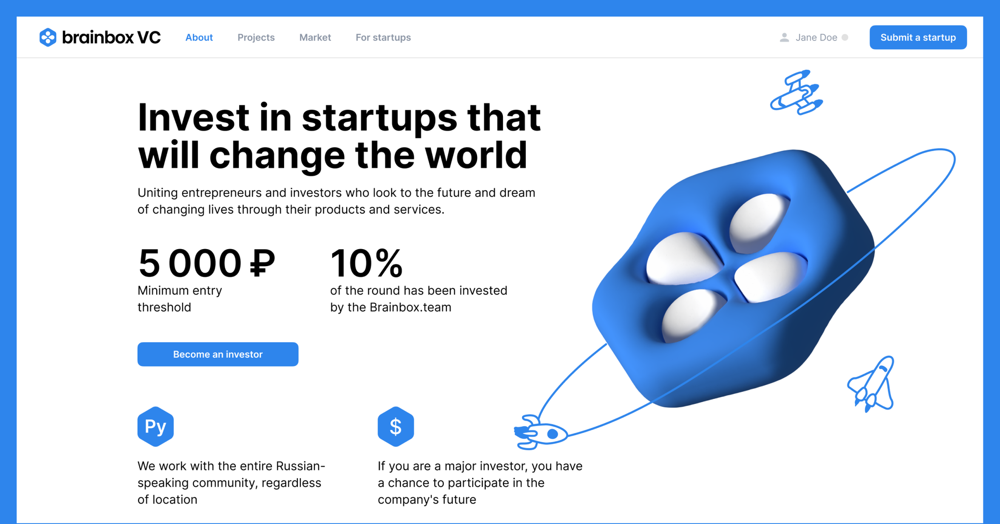
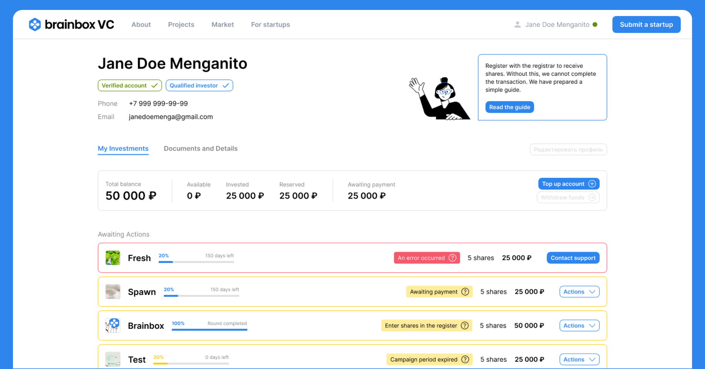
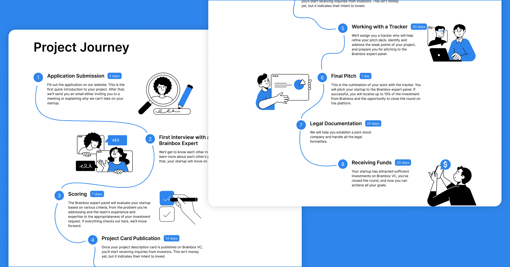
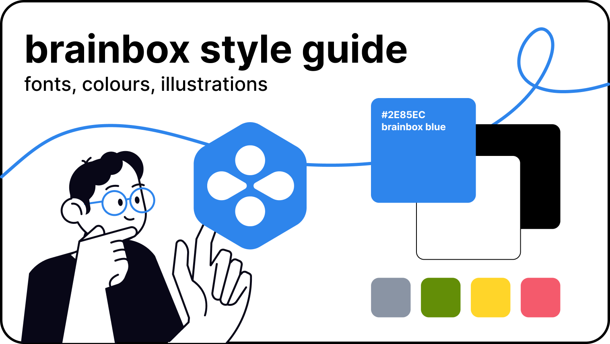
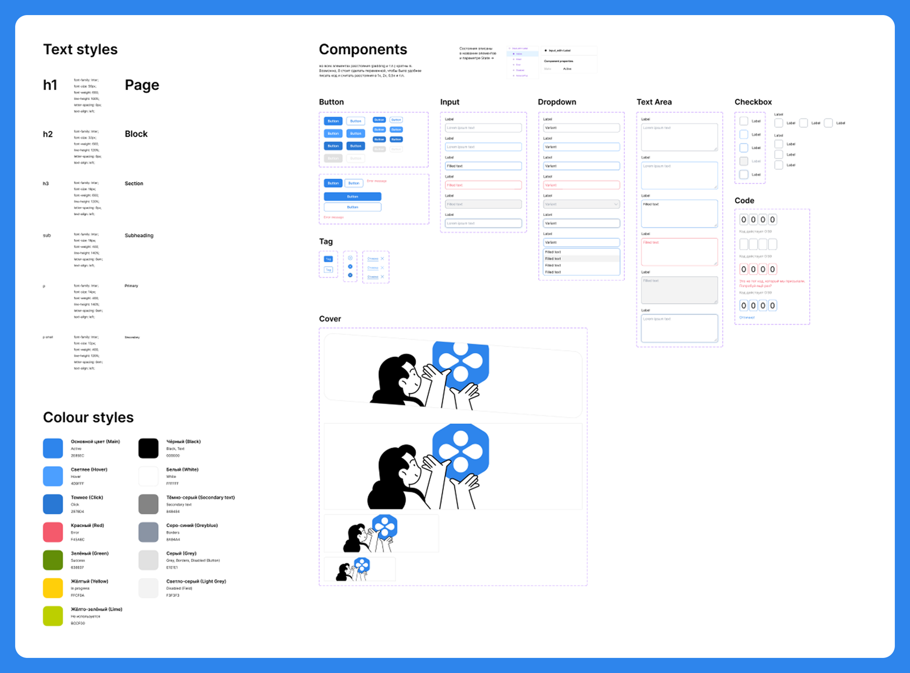
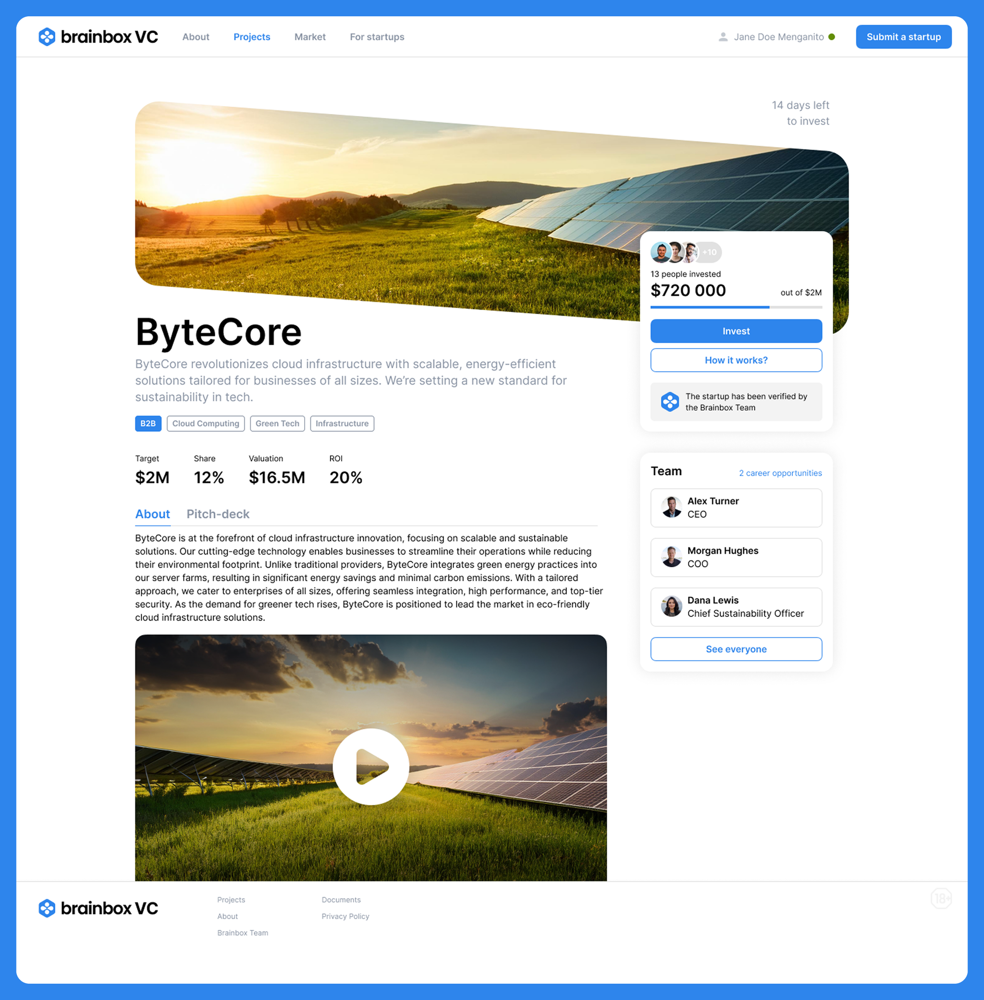

Launched Russia's First Crowdinvesting Platform for IT Startups — from idea to market in 9 months

In 2021, Brainbox VC set out to crack a hard problem: make startup investing legal, easy, and digital in Russia. From zero playbook. In a regulated fintech space. For both investors and founders.
I led the entire design — product, brand, UX systems, and marketing. Solo. The platform now drives millions in startup investments and stands as a first-of-its-kind in the country.
My mission was to build the entire UX and marketing foundation.
20M₽+ raised by startups in 6 months.

Product UX built from scratch. Zero references. High regulation. Full trust design.
Live in under 9 months.
- Designed both sides of the platform: investors and startup founders
- Built flows for legal onboarding, share reservation, and financial interactions
- Integrated Status registrar for compliance
- Crafted trust-by-design system: clarity, human tone, transparency
Result: Platform went live in under 9 months. First regulated model of its kind. Drove active engagement and capital flow.
Challenge: The registration flow was legally heavy — long forms, personal data, document uploads. High drop risk. I couldn't remove required fields, but I optimized everything else: reused data where possible, and built a "smart assistant" widget that explained each step (think Word's Clippy, but useful). Together with the frontend dev, we launched it as an iframe-based, interactive guide inside the STATUS platform.

Marketing validation engine
Launched before product was ready.
- Built first GTM with Tilda landing + Google Sheets funnel
- Created pitch decks, fundraising materials, and campaign visuals
- Supported startup acquisition and accelerator outreach
- Used marketing assets to test demand and prove market need
Result: Startups signed up pre-launch. Investors joined waiting lists. First 20M₽ in 6 months, without paid traffic.
Challenge: We needed instant visual identity — "branding without branding." No time for research or iteration. I created a minimal system: one base color, strict usage rules (e.g., no black on blue), adapted premade illustrations into a coherent style, and introduced a quick visual hook — a loop — to unify all marketing assets.


UX Systems to handle scale, risk, and law
Delivered clarity in chaos.
- Built reusable UI components for all regulated flows
- Created step-by-step guidance systems and contextual assistant
- Minimized drop-off through clear microcopy and flow logic
- Designed for repeatability across future projects and startups
Result: Platform could onboard multiple projects with no redesign. Legal complexity handled through scalable UX.
Challenge: The project was evolving in real time, with no fixed scope — so I created a live visual structure to keep the entire flow in sync. This became critical in later stages when complexity spiked and it was easy to lose track of page connections and user flow.

Testimonial
"Mitia's exceptional ability to quickly grasp tasks, devise a clear plan, and deliver results on or ahead of schedule has been invaluable. His contributions have significantly driven our success, and I wholeheartedly recommend him as an outstanding professional."
Albert Aliev
CEO at Brainbox VC
Want to learn more?
This is just a surface-level view. Under the hood: dozens of tests, fast iterations, and hard decisions that turned a tool into a growth engine. If you're working on a product where design needs to move the numbers — let's talk.
I'll walk you through the real breakdown.
Email · LinkedIn
Mitia Morovov, 2025